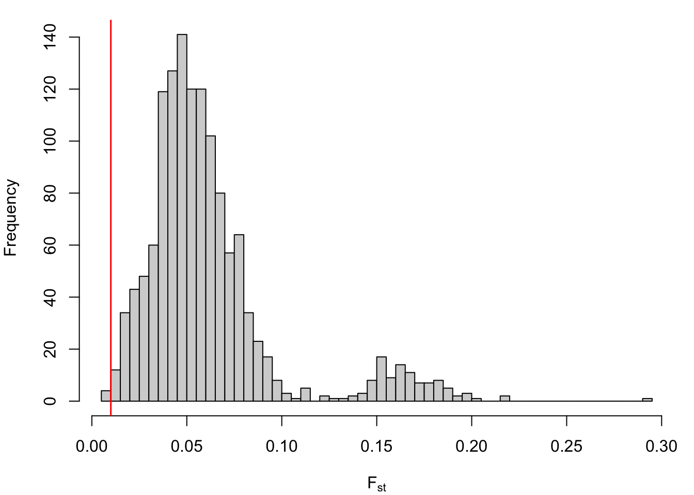
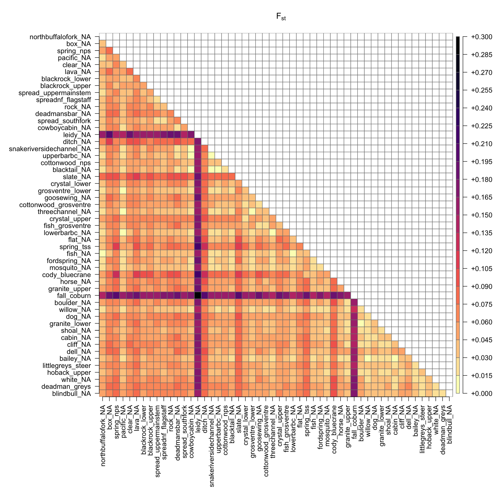
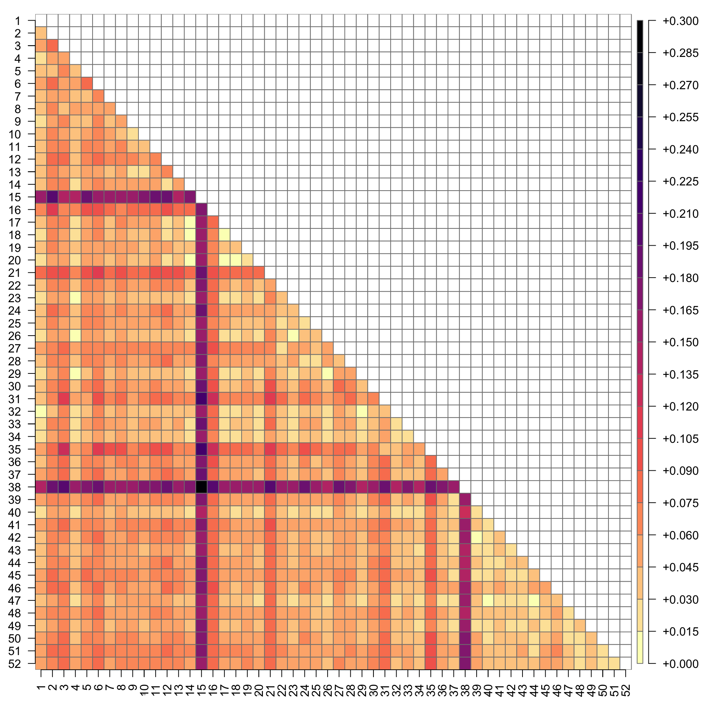

Purpose: calculate index of genetic differentiation (Fst) among baseline reporting groups. See Willing et al. (2012, PLoS One) for details on how number of SNPs and sample size (# of individuals) affects the accuracy of Fst.
4.1 Load data
Load genotyp data, calculate reporting group sample size, and load GPS location data:
Code
# load genotype datarefdat<-read_csv("/Users/jeffbaldock/Library/CloudStorage/GoogleDrive-jbaldock@uwyo.edu/Shared drives/wyo-coop-baldock/UWyoming/Snake River Cutthroat/Analyses/Snake River GSI Quarto/Baseline Testing/UpperSnakeRiver_GTseq_InputData_NoSibs_clean_baseline.csv")%>%mutate_all(~replace_na(., 0))# get sample sizess<-refdat%>%group_by(repunit)%>%summarize(ss =n())# location data for sorting by latitudegps<-read_csv("/Users/jeffbaldock/Library/CloudStorage/GoogleDrive-jbaldock@uwyo.edu/Shared drives/wyo-coop-baldock/UWyoming/Snake River Cutthroat/Analyses/Snake River GSI Quarto/Landscape Covariates/RepUnit_LatLong.csv")%>%arrange(desc(lat))
Reformat genotype data for hierfstat:
Code
refdat_sub<-refdat[,c(5:ncol(refdat))]%>%unite(vnew, sep ="")%>%separate(vnew, into =colnames(refdat)[c(seq(from =5, to =ncol(refdat), by =2))], sep =c(seq(from =2, to =532, by =2)))refdat_sub<-as_tibble(data.frame(sapply(refdat_sub, as.numeric)))%>%mutate_all(~na_if(., 0))refdat_sub$repunit<-refdat$repunitrefdat_sub<-refdat_sub%>%relocate(repunit)
Plot histogram of pairwise Fst values. Vertical red line denotes Fst = 0.01: the recommended minimum pairwise Fst for accurate genetic stock identification (Araujo et al. 2014, TAFS). Note that most pariwise comparisons (among reporting groups) are above this threshold.
Code
par(mar =c(4,4,1,1))hist(ref_fst_bylat[lower.tri(ref_fst_bylat)], xlab =expression("F"["st"]), main ="", breaks =50)abline(v =0.01, col ="red", lwd =1.5)

Proportion of reporting group pairs for which Fst < 0.01
# plot color matrix of Fstr2<-ref_fst_bylatr2[upper.tri(r2)]<-NApar(mar =c(12,12,4,4))plot(as.matrix(r2), main =expression("F"["st"]), col =rev(magma(20)), las =2, xlab ="", ylab ="", axes =F, border ="grey50")axis(1, cex.axis =0.2)axis(2, cex.axis =0.2)

The same plot, but with numbered reporting groups (for supporting information):
Code
# plot color matrix of Fstrownames(r2)<-1:dim(r2)[1]colnames(r2)<-1:dim(r2)[1]par(mar =c(2.5,2.5,1,4))plot(as.matrix(r2), main ="", col =rev(magma(20)), las =2, xlab ="", ylab ="", axes =F, border ="grey50")axis(1, cex.axis =0.2)axis(2, cex.axis =0.2)

Code
jpeg("/Users/jeffbaldock/Library/CloudStorage/GoogleDrive-jbaldock@uwyo.edu/Shared drives/wyo-coop-baldock/UWyoming/Snake River Cutthroat/Analyses/Snake River GSI Quarto/Baseline Fst/BaselinePopsFst_colormatrix_byLat_numbered.jpg", res =1000, units ="in", width =10, height =10)par(mar =c(2.5,2.5,4,4))plot(as.matrix(r2), main =expression("F"["st"]), col =rev(magma(20)), las =2, xlab ="", ylab ="", axes =F, border ="grey50")axis(1, cex.axis =0.2)axis(2, cex.axis =0.2)dev.off()
quartz_off_screen
2
For Wy-ACT Fish-Flows manuscript, get range and median Fst among spring creeks with redd count data
# Baseline FstPurpose: calculate index of genetic differentiation (Fst) among baseline reporting groups. See Willing et al. (2012, PLoS One) for details on how number of SNPs and sample size (# of individuals) affects the accuracy of Fst.```{r echo=FALSE}library(tidyverse)library(hierfstat)library(plot.matrix)library(viridis)library(reactable)```## Load dataLoad genotyp data, calculate reporting group sample size, and load GPS location data:```{r}# load genotype datarefdat <-read_csv("/Users/jeffbaldock/Library/CloudStorage/GoogleDrive-jbaldock@uwyo.edu/Shared drives/wyo-coop-baldock/UWyoming/Snake River Cutthroat/Analyses/Snake River GSI Quarto/Baseline Testing/UpperSnakeRiver_GTseq_InputData_NoSibs_clean_baseline.csv") %>%mutate_all(~replace_na(., 0))# get sample sizess <- refdat %>%group_by(repunit) %>%summarize(ss =n())# location data for sorting by latitudegps <-read_csv("/Users/jeffbaldock/Library/CloudStorage/GoogleDrive-jbaldock@uwyo.edu/Shared drives/wyo-coop-baldock/UWyoming/Snake River Cutthroat/Analyses/Snake River GSI Quarto/Landscape Covariates/RepUnit_LatLong.csv") %>%arrange(desc(lat))```Reformat genotype data for hierfstat:```{r}refdat_sub <- refdat[,c(5:ncol(refdat))] %>%unite(vnew, sep ="") %>%separate(vnew, into =colnames(refdat)[c(seq(from =5, to =ncol(refdat), by =2))], sep =c(seq(from =2, to =532, by =2))) refdat_sub <-as_tibble(data.frame(sapply(refdat_sub, as.numeric))) %>%mutate_all(~na_if(., 0))refdat_sub$repunit <- refdat$repunitrefdat_sub <- refdat_sub %>%relocate(repunit)```Calculate basic statistics:```{r}mybs <-basic.stats(data.frame(refdat_sub))print(mybs)```## Pairwise FstCalculate pairwise Fst following Weir and Cockerham (1984)...also see Harris et al (2022) Conservation Genetics. NOTE: this takes ~1 hr to run```{r}# ref_fst <- pairwise.WCfst(data.frame(refdat_sub))# write.csv(data.frame(ref_fst), "GSI Analysis/Baseline Fst/UpperSnakeRiver_GTseq_BaselinePopsFst.csv", row.names = T)ref_fst <-read.csv("/Users/jeffbaldock/Library/CloudStorage/GoogleDrive-jbaldock@uwyo.edu/Shared drives/wyo-coop-baldock/UWyoming/Snake River Cutthroat/Analyses/Snake River GSI Quarto/Baseline Fst/UpperSnakeRiver_GTseq_BaselinePopsFst.csv")ref_fst_bylat <-tibble(ref_fst[,c("X", gps$repunit)]) %>%arrange(match(X, gps$repunit)) %>%column_to_rownames("X")reactable(round(ref_fst_bylat, digits =3))```Range of among-population Fst:```{r}range(ref_fst_bylat, na.rm = T)```Plot histogram of pairwise Fst values. Vertical red line denotes Fst = 0.01: the recommended minimum pairwise Fst for accurate genetic stock identification (Araujo et al. 2014, TAFS). Note that most pariwise comparisons (among reporting groups) are above this threshold.```{r}par(mar =c(4,4,1,1))hist(ref_fst_bylat[lower.tri(ref_fst_bylat)], xlab =expression("F"["st"]), main ="", breaks =50)abline(v =0.01, col ="red", lwd =1.5)``````{r echo=FALSE, message=FALSE, results='hide'}jpeg("/Users/jeffbaldock/Library/CloudStorage/GoogleDrive-jbaldock@uwyo.edu/Shared drives/wyo-coop-baldock/UWyoming/Snake River Cutthroat/Analyses/Snake River GSI Quarto/Baseline Fst/BaselinePopsFst_hist.jpg", res = 1000, units = "in", width = 4.5, height = 4.25)par(mar = c(4,4,1,1))hist(ref_fst_bylat[lower.tri(ref_fst_bylat)], xlab = expression("F"["st"]), main = "", breaks = 50)abline(v = 0.01, col = "red", lwd = 1.5)dev.off()```Proportion of reporting group pairs for which Fst < 0.01```{r}rrr <- ref_fst_bylat[lower.tri(ref_fst_bylat)]length(rrr[rrr <0.01]) /length(rrr)```For which pairs is Fst < 0.01?* Fst indicates low differentiation/lots of mixing among UBBC, Cowboy Cabin, Snake River Side Channel, and Blacktail.```{r}fstlist <-lapply(apply(ref_fst_bylat <0.01, 1, which), names)fstlist[lengths(fstlist) >0]```Plot matrix of pairwise Fst: ```{r fig.width=12, fig.height=12}# plot color matrix of Fstr2 <- ref_fst_bylatr2[upper.tri(r2)] <- NApar(mar = c(12,12,4,4))plot(as.matrix(r2), main = expression("F"["st"]), col = rev(magma(20)), las = 2, xlab = "", ylab = "", axes = F, border = "grey50")axis(1, cex.axis = 0.2)axis(2, cex.axis = 0.2)``````{r echo=FALSE, message=FALSE, results='hide'}jpeg("/Users/jeffbaldock/Library/CloudStorage/GoogleDrive-jbaldock@uwyo.edu/Shared drives/wyo-coop-baldock/UWyoming/Snake River Cutthroat/Analyses/Snake River GSI Quarto/Baseline Fst/BaselinePopsFst_colormatrix_byLat.jpg", res = 1000, units = "in", width = 12, height = 12)par(mar = c(12,12,4,4))plot(as.matrix(r2), main = expression("F"["st"]), col = rev(magma(20)), las = 2, xlab = "", ylab = "", axes = F, border = "grey50")axis(1, cex.axis = 0.2)axis(2, cex.axis = 0.2)dev.off()```The same plot, but with numbered reporting groups (for supporting information):```{r fig.width=10, fig.height=10}# plot color matrix of Fstrownames(r2) <- 1:dim(r2)[1]colnames(r2) <- 1:dim(r2)[1]par(mar = c(2.5,2.5,1,4))plot(as.matrix(r2), main = "", col = rev(magma(20)), las = 2, xlab = "", ylab = "", axes = F, border = "grey50")axis(1, cex.axis = 0.2)axis(2, cex.axis = 0.2)``````{r}jpeg("/Users/jeffbaldock/Library/CloudStorage/GoogleDrive-jbaldock@uwyo.edu/Shared drives/wyo-coop-baldock/UWyoming/Snake River Cutthroat/Analyses/Snake River GSI Quarto/Baseline Fst/BaselinePopsFst_colormatrix_byLat_numbered.jpg", res =1000, units ="in", width =10, height =10)par(mar =c(2.5,2.5,4,4))plot(as.matrix(r2), main =expression("F"["st"]), col =rev(magma(20)), las =2, xlab ="", ylab ="", axes = F, border ="grey50")axis(1, cex.axis =0.2)axis(2, cex.axis =0.2)dev.off()```For Wy-ACT Fish-Flows manuscript, get range and median Fst among spring creeks with redd count data```{r}mypops <-c("blacktail_NA", "cody_bluecrane", "cowboycabin_NA", "fish_NA", "flat_NA", "lowerbarbc_NA", "snakeriversidechannel_NA", "spring_tss", "threechannel_NA", "upperbarbc_NA")ref_fst2 <- ref_fst_bylat[mypops, mypops]ref_fst3 <- ref_fst_bylat[lower.tri(ref_fst2)]range(ref_fst3, na.rm = T)median(ref_fst3, na.rm = T)```